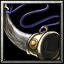

充滿謎團的人物。起初侍奉齋藤道三，道三敗亡後幫助 足利義昭聯絡織田信長，最終仕於信長，政戰兩道都有不俗才能而被重用，成為丹波龜山城主。但突然寵信大衰屢受信長斥責，甚至沒收領地，命其協助秀吉進攻毛 利，於是光秀在出征途中高呼“敵人在本能寺！”發動本能寺之變。其後快速攻克安土、京都，迫使織田信忠自殺，控制日本中心，獲得朝廷賞賜征夷大將軍頭銜。 然而被火速南下的羽柴秀吉在山崎擊敗，逃亡中遭農民殺害，前後不過十一日稱為“十日天下”。光秀為何反叛？反感信長對家臣苛刻態度？反對信長對佛教徒殘 殺？還是僅僅有奪取天下的野心？光秀之死也有多種異說，甚至傳說他並沒有死，隱姓埋名成了家康的謀士，被稱為“黑衣宰相”的天海和尚。 敏捷型近戰英雄
法術 ：Ｂ 輔助 ：Ａ 最擅長破塔，輔助進攻 敏 捷：27+2.70（主要） 智慧：27+2.00 
Ｄ[主 動] 灌頂斬擊使用刀背打擊目標的頭顱，造成100傷害且暈眩 1.7秒。 消耗法力125，等待時間65秒。  Ｗ[主動] 血刃亂舞 增加[25/50/75/100]%攻擊速度與移動速度[5/8/11/14]%， 並且攻 擊時造成[240]範圍240點傷害，持續3秒。 消耗法力[100/120/140/160]，等待時間[40/35/30/25]秒。 Ｅ[主動] 火雨術 呼喚6發火焰來傷害範圍350內的敵人，每波火雨會造成[185]點 損傷，並且在4秒內造成每秒[12]點傷害，對建築物的傷害減半。 消耗法力[120/140/160/180]，等待時間13秒。 Ｒ[被動] 劍術 在範圍700內每0.2秒會降下一顆火球，每顆火球造成 300範圍的敵人[85/95/110]點傷害，並擊暈0.53秒。能傷害建築物。 需持續施法，最多[45/55/65]顆。 消 耗法力[270/320]，等待時間135秒。 |